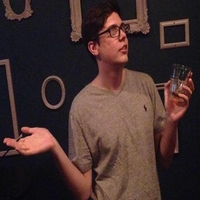

About Us

Greg Harris Project Leader
I channel Greg Jennings
Austin Euchner Key Concepts Holder
I'm new, I don't know what to do.
Andrew Dorn Web Master
I'm a software engineer with some experience building data visualization tools. My plan is to leverage those skills towards building and refining the UBR web app.


Diva Agarwal Communication Leader
TBD
Alan Tentinger Job Title
What does this team member to? Keep it short! This is also a great spot for social links!